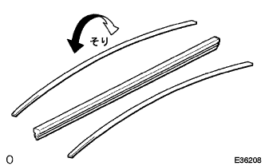
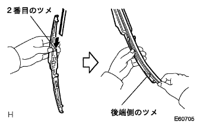
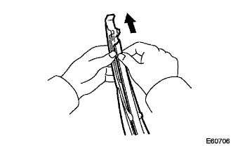

Rear wiga rubber installation |
| 1. Rearaway papers installation |
|  |
Attach the two backing plates as shown in the figure.
|  |
Insert a rear wiplver from the second claw from the tip of the rear wai p blade from the second claw.
After passing the rear wiplver through the claws on the rear end, it is pulled out from the stopper at the rear end.
|  |
Pass through the claws on the tip.
| 2. Rear wiper blade mounting |
Attach the rear wai pole to the rear wiperm with the claws.
Make sure that the claws are getting stuck and return the wiperem.